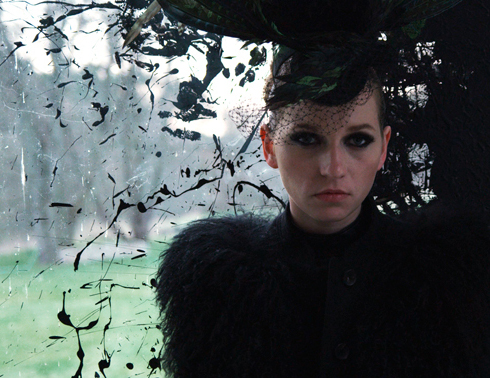

Top Girl oder la déformation professionnelle
Tatjana
Turanskyj
D 2014
{kind=link}
94 min – HD – Deutsch
B: Tatjana
Turanskyj – Mit Julia Hummer, Susanne Bredehöft, Jojo Pohl, RP
Kahl, Nina Kronjäger
K: Lotta Kilian – S: Stephanie Kloss, Ricarda Zinke – M: Niels
Lorenz
SD: Jochen Jezussek, Christian Obermaier – T: Matthias Gauerke
P: Tatjana Turanskyj, Jan Ahlrichs
V: Drop-Out Cinema
turanskyj-ahlrichs.com
Helena is a 30-year-old actress and single mother who supplements her unstable income by working as an escort. This leads her into situations that are both comical, absurd and humiliating. It‘s these situations that form the framework of this feminist essay which explores different ideas of female representation, agency and bodies. Director Tatjana Turanskyj has a background in performance and video art, and ”Top Girl” is a film that explores the boundaries between the worlds of contemporary art and the movie business.
sonday 9 oct 11 a.m. theatiner filmkunst
Tatjana Turanskyj has been a film maker and a performance artist since 2001, the year she co-founded the Berlin women’s film collective hangover ltd.*., of which she was a member until 2007 and in all of whose films she performed and acted as co-writer and co-director. The collective’s film Remake (2004) won the 1st Prize at the International Short Film Festival in Oberhausen in 2005. Since 2008 Tatjana Turanskyj has been a joint partner in the production company turanskyj & ahlrichs***, which produced her acclaimed and award winning film Eine Flexible Frau (The Drifter, 2010) as their first project. Her second film with turanskyj & ahlrichs***, Top Girl (2013) had its world premiere at the International Forum of Young Film at the 64th Berlin Film Festival in 2014. Her new Film “Disorientation is no crime”, which she had produced and directed together with documentary film maker Marita Neher was premiered 2016 at the 2. BERLIN CRITICS WEEK. TURANSKYJ is also working as a (script) writer and is co-founder of the women´s organization PRO Quote Regie for gender equality in the film business She is based in Berlin and develops two new films right now.
Films Remake 2004 – Sehnsucht nach Schüssen 2006 – Korleput 2007 – Eine flexible Frau 2010 – Top Girl 2014 – Orientierungslosigkeit ist kein Verbrechen 2016 (11. UX)